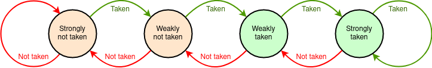

The usual way processors fetch instructions is to ‘assume’ that the next instruction is at the successive address from the current one, unless overridden by a branch. Branches are relatively rare (on average about every six or seven operations) so speculating on this is fairly effective.
The problem is that branches disturb the pipeline flow and are frequent enough to cause problems. A deeply pipelined processor can have more than six or seven instructions in its pipeline!
A branch predictor attempts to spot the branches before they are fetched and adjust what is fetched to avoid the wrong operations.
A Branch Target Buffer (BTB) is a cache structure which is placed in parallel with the PC incrementer. It holds a subset of branches previously encountered (temporal locality is assumed) pairing the instruction address with its destination. If the current PC value is spotted as a branch then the destination can override the incrementer output.
A predicted branch is tagged as such so that it can be undone if the prediction was incorrect
The example below is a contrived structure comprising two nested
loops with an ‘if’ statement in the centre. In
‘Option A’ the ‘if’ is rarely taken which
means the branch to ‘skip’ is usually taken.
‘Option B’ reverses the frequency of the ‘if’
being taken, which means that a naive ‘assume branches always
taken’ approach works less well: more ‘unbranches’
are needed.
The pipeline here has three stages; the flow through these is highlighted in the code. A taken branch will incur a two cycle penalty as the pipeline refills, unless predicted.
Static branch prediction uses fixed assumptions such as ‘always taken’. There are more sophisticated static approaches with conditional branches, such as ‘backwards taken’ (it's probably a loop and loops tend to iterate many times) ‘forwards not taken’ (it's probably an ‘if’).
Dynamic branch prediction uses run-time information to try to predict whether a conditional branch will be taken or not. A simple approach is ‘the same as last time’ – but this is not very good with loops since, when a loop is entered it will predict that it will not iterate, since most recently it exited.
A more sophisticated approach (illustrated below and used in the example) holds a counter per entry so, if one behaviour has dominated it takes two successive occurences of the opposite decision before the predictor changes its mind. This overcomes the ‘loop exit’ issue.

Note in the demonstration how the BTB state entries gravitate towards the (recent) majority behaviour of the corresponding branches. New entries are inserted by ‘new’ branches with the state set to ‘Weakly taken’.
There are other, more sophisticated approaches to both dynamic and static prediction than are illustrated here. In particular, dynamic predictors keep more state and look for patterns in the branch history.
Spatial locality is not really applicable here: just because one instruction is a branch will not imply its immediate neighbours will be branches. The cache ‘lines’ will therefore be a single element. The working set of branches will typically be quite small – structures like nested loops will benefit most – so a small BTB will probably be fully associative. However it need not be a single structure: a small, fully associative BTB can work in parallel with a larger ‘L2’ BTB.
Simply cacheing encountered branches and assuming they will be taken in future is quite effective but can be improved upon. Modern branch predictors note the history of conditional branch decisions and use this to help speculate on whether the branch will be taken on each encounter.